08指针
指针是C语言中的精华，也是C语言程序的重点和难点，在C语言编写的程序中，会大量使用到指针。因此，掌握C语言的指针，是非常重要的。懂了指针，就懂了C语言的大部分内容。
要理解指针，需要先理解下系统的内存布局和变量的内存地址，因为指针和内存地址是息息相关的。
8.1 系统内存布局
以x86为例，x86支持32位寻址，因此可以支持最大23^2=4GB的虚拟内存空间（也可以通过PAE技术增加到36位寻址，因此可以将寻址空间扩大到64GB）。如图所示，在4G的虚拟地址空间中，Windows系统的内存主要分为内核空间和应用层空间上下两部分，每部分各占约2GB，其中还包括了一个64KB的NULL空间以及非法区域。Windows内存的逻辑地址包含2部分，即段选择符和偏移地址，CPU在做地址翻译的时候，通过分段机制计算出一个线性地址，再通过页表机制映射到物理地址以便存取物理内存中的数据和指令。
X64（AMD64）的内存布局与X86的内存布局类似，不同的地方在于各自空间的范围和大小不同，同时X64下还存在着一些空洞（hole），如图所示。在X64内存理论上支持最大264的寻址空间，但实际上这个空间太大了，目前根本用不完，因此实际上的X64系统一般都只支持到40多位（比如Windows支持44位最大寻址空间为16TB，Linux 支持48位最大寻址空间256TB等），支持的空间达到了TB级别。但是，无论是在内核空间还是在应用层空间，这些上TB的空间并不都是可用的，存在着所谓的空洞。
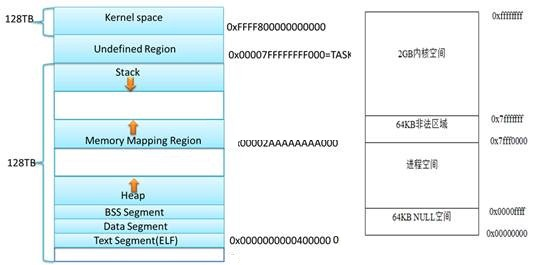X64与x86系统内存布局
当程序加载入内存后，程序在内存中可以分为若干个区，这些区包括：静态区（.data,.rdata,.bss段等），代码区(.text)，堆区，栈区等。
.text 代码段，这个存放代码的，用汇编角度来看就是指令。
.rdata 只读数据段，存放常量，字符常量，const常量。
.data 数据段，存放已经初始化好的全局变量和静态变量。
.bss 存放未初始化的全局变量和静态变量。
.rdata，.data，.bss都是存放的数据。除了.bss段，.rdata，.data段的值都是在编译的时候就确定了，并且将其编译进了可执行文件，经过反汇编都能找得到。bss段是在代码运行的时候手动编写汇编代码将其初始化为0的（这就是未初始化的全局和静态变量默认值为0的根源）
.stack:栈区，存放局部变量等。如下图所示，栈区存放这函数调用过程中的形参，返回地址以及局部变量等（将在函数一章讲调用约定的时候具体介绍栈上的数据）。
8.2 存储变量的内存地址
变量是存放在内存中的，比如上面代码中的变量i和a，存放变量i和a的内存的首地址，就是变量i和a的地址。可以用&取址运算符获得。
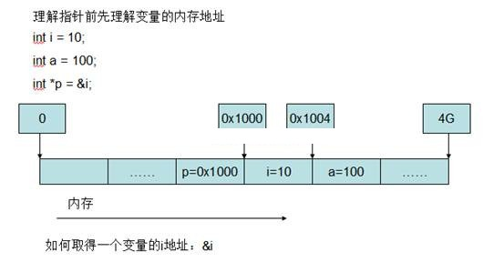而对于指针p来说，它本身也是一个变量，存放在内存中，只不过它的值是一个内存地址，这个内存地址，可以是其它变量的地址。
内存的地址可以分为有效地址，即这个所对应的内存是可访问的；还有无效地址，访问无效地址，会导致程序崩溃，比如NULL地址就是一个无效地址:
#define NULL ((void *)0)
因此，试图去访问无效地址所指内存，会导致程序崩溃。
我们知道，电脑是多程序运行的，首先运行的就是操作系统的内核及一些工具。那如何确认程序使用的内存地址范围呢？其实，程序是在操作系统上的抽象，具体给的地址范围是操作系统通过虚拟地址的方式在运行时给出的，其复杂性留给了操作系统。
8.3 指针定义：变量，地址，类型（宽度）
指针其实就是一个变量，和其他类型的变量一样。它与其他变量的不同就在于它的值是一个内存地址，指向内存的某一个地方。即指针是一种存放另一个变量的地址的变量。
比如：
int i = 1; int *p = &i;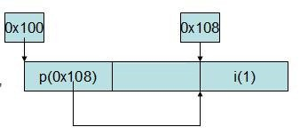
首先定义了一个整型变量i，并初始化值为1。再定义了一个整型的指针p，它的值是i的地址。因此，指针p指向了i所在的内存，该段内存占4个字节。
因此指针含义可以分为3个方面来理解：
1 它是一个变量，所以也占用一定的内存空间（在X86上占用4个字节，X64上占用8个字节）
2 它的值是一个内存地址。这个地址可以是其它变量的地址。
3 它的地址指向的内存空间具有确定的长度。这是指针与地址的本质区别。如果只告诉你一个内存地址，你不会知道从这个地址开始的内存有多长。但如果告诉你一个指针，你会明确的知道从这个内存地址开始的内存有多长。因为指针都是有类型的。知道了指针的类型，就确定了所指向的内存地址对应的长度。
指针是C语言中的精华。指针其实就是一个变量，和其他类型的变量一样。在32位机器上，它是一个占用四字节的变量，它与其他变量的不同就在于它的值是一个内存地址，指向内存的某一个地方。即指针是一种存放另一个变量的地址的变量。
int main(void)
{
int i = 1;
int *p = &i; // 指针p指向了i的地址
*p += 1; // *p将i的值增1
printf(“i = %d\n”, i);
return 0;
}
C语言中最复杂最容易出错的要数指针了。指针让一些初级程序员望而却步，而一些新的开发语言（如Java，C#）干脆就放弃了指针。但是，在C语言程序里，你会发现大量的C语言指针的使用。因此，从一定程度上来说，只有掌握了指针，才算真正的学会了C语言。
指针的定义方式为：
类型名 *指针名;
比如：
char *pch;
上面的语句就定义了一个名为pch的字符指针。在C语言里，根据指针的不同类型，可以把指针定义为内建型别指针和自定义结构指针。根据类型不同，会将指针指向的内存数据按照不同的类型解析。即指针如果是int类型，那么就将指针指向的内存解析为一个整型；如果指针是char类型，那么就将指针指向的内存解析为一个char类型。
指针的初始化，可以让指针指向某个变量的地址，也可以让指针指向一个由内存分配函数分配的内存。
8.4 指针声明
char *pch; int *pi; float *pf; double *pd;
那么如何取得一个变量的地址呢？可以在变量前面加&运算符。比如：
char c = ‘c’;
那么c在内存中的地址为：&c。
void main(void)
{
char c=’a’;
char *pch = &c;
printf(“%p,%p\n”, pch, &c);
}
所以，可以给字符指针做如下赋值：
char c = ‘c’; char *pch = &c;
这个时候，pch的值就是c的地址了。如果要通过指针访问对应的变量的值，可以使用*运算符。比如：
char c = ‘c’; char *pch = &c; printf(“c=%c\n”, *pch);
8.5 &与*运算符
我们把&叫做取址运算符，用来获取某个变量的地址，比如：
int i = 1; int *p = &i;//p is reference of i, 这里把p当做是对i的一个引用(reference)
我们又把*叫做解引用(dereference)运算符，与&运算符互为逆运算。比如：
printf(“*p is:%d,i is %d\n”, *p, i);// *p is dereference for i ，
// *p equals i，*p代表的就是i
*p += 1; //把p所指向的地址的内存（i）的值加1
printf("*p is:%d,i is %d\n", *p, i);
这里*p代表的就是i。
*p中，p必须是有效的地址，否则会引发程序崩溃。比如：
int *p = NULL; *p = 0; //此时，p无NULL地址，会引发程序异常
图解指针*与&的含义：
char i,j,*p1,*p2; i='a'; j='b'; p1=&i; p2=&j; //图1所示，p1指向i，p2指向j *p2=*p1;//图2所示，把i的值赋值给了j。因为*p2为j，*p1位i，所以等价为j=i; p2=p1; //图3所示，把p1的值，赋值给p2，因此，p2中存放的也是i的地址，所以p2指向了i;

8.6 *p容易混淆的地方：定义指针与解引用
char c=‘a’;
char *s = “hello world”;//此处的*s是用于定义指针s
char *p = &c; //此处的*p是用于定义指针p，实际上是(char*) p=&c
*p += 1; //此处的*p是解引用(即c)
printf(“%c\n”, *p); //此处的*p是解引用
void func(char *p) //此处*p是定义指针
{
}
func(&c); //传指针
func(p); //传指针
8.7 指针初始化与引用
当定义了一个指针，对它赋值与初始化的方法：
A：
int i, *p;//声明了一个整型变量i，一个指针p，这里的*p不是取值，是在定义一个指针 p= &i;
B：
int c; int *p = NULL; // 声明了一个指针p，并初始化为NULL p=&c; // 将指针p指向变量c
C：
int d; int *p = &d; //声明了一个指针p，并直接初始化为变量d的地址
D：
char *p = (char *)malloc(100*sizeof(char));//声明了一个字符指针p，并初始化为堆上的一个地址 char *str = “hello world”;//声明了一个字符指针str，并初始化为字符串的首地址 char c=‘A’; char *str = &c;//声明了一个指针str并直接初始化为变量c的地址 char *pch = &c;
8.8 指针类型与互相转换，sizeof(p)，sizeof(*p)
指针的类型可以有如下几种：
char *p; //指向内存单元1个字节 short *p; //指向内存单元2个字节 int *p; //指向内存单元4个字节 float *p; //指向内存单元4个字节 double *p;//指向内存单元8个字节 void *p //参见8.9一节内容介绍
当然，在学习了结构体等构造型别后，指针还可以包含这些新的构造类型。
指针作为变量，存放在内存中，占有内存空间，因此也是有长度的：
sizeof(p)=4 or 8 // 计算指针的长度，在x86 4字节， x64平台64位程序中8个字节 sizeof(*p) // 计算指针对应类型的长度
例子：在X86平台，式计算下面的值
char c = 'a';
char *p1=&c;
int x=10;
int *p2=&x;
char buf[]="hello world";
char *str="hello world";
sizeof(p1)=?
sizeof(p2)=?
sizeof(*p1)=?
sizeof(*p2)=?
sizeof(buf)=?
sizeof(str)=?
sizeof(*buf)=?
sizeof(*str)=?
typedef struct _S
{
int a;
char c;
}S,*PS;
S s;
S *ps= &s;
sizeof(ps)=?
sizeof(*ps)=?
sizeof(p1)=4 //指针的长度
sizeof(p2)=4 //指针的长度
sizeof(*p1)=1 //指针对应类型char的长度
sizeof(*p2)=4 //指针对应类型int的长度
sizeof(buf)=12 //buf是数组，sizeof计算的是数组的长度，
//该数组通过"hello world"初始化，包含最后的'\0'，共12个字节
sizeof(str)=4 //指针的长度
sizeof(*buf)=1 //指针对应类型char的长度
sizeof(*str)=1 //指针对应类型char的长度
sizeof(ps)=4 //指针的长度
sizeof(*ps)=8 //指针对应类型S的长度
指针的类型可以互相转换：
下面的代码将字符类型的指针转化为int*类型指针，p所指的内存宽度由1个字节变为了4个字节
char c; int *p = (int *) &c; int a; int *p1 = &a; char *p2 = (char *)p1;
下面的代码把int*类型指针转化为字符类型指针，内存宽度p2所指的内存宽度由p1的4个字节变为了1个字节。
int a = 0x12345678;
char *p1 = (char *)&a;
int *p2 = &a;
printf("*p1=0x%x,*p2=0x%x\n", *p1,*p2);
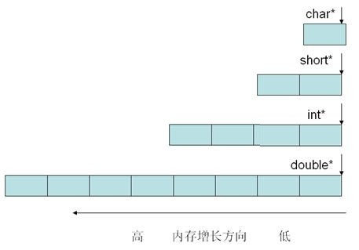
通过上面的例子和图，我们可以发现，指针含义可以分为3个方面来理解：
1 它是一个变量，所以也占用一定的内存空间（在X86上占用4个字节，X64上占用8个字节）
2 它的值是一个内存地址。这个地址可以是其它变量的地址。
3 它的地址指向的内存空间具有确定的长度。这是指针与地址的本质区别。如果只告诉你一个内存地址，你不会知道从这个地址开始的内存有多长。但如果告诉你一个指针，你会明确的知道从这个内存地址开始的内存有多长。因为指针都是有类型的。知道了指针的类型，就确定了所指向的内存地址对应的长度。
8.9 void* 类型指针
我们可以使用void*来定义个void *类型的指针如下：
void *p;
p是void *类型指针，其他类型指针隐式转换成该类型，不能直接使用*p来取值，必须先转换为特定类型再做取值。
p可以接受任何类型的指针赋值。
p赋值给其它类型的指针，需要强转。
p不能进行解引用*运算，必须先转换。
比如：
int i = 10; char ch = ‘a’; int *p1 = &i; char *p2 = &ch; void *pv1 = p1;//把p1赋值给pv1，不需强转，不能使用*pv1 void *pv2 = p2;//把p2赋值给pv2，不需强转，不能使用*pv2 int *p3 = (int *)pv1; //把pv1赋值给p3，需要强转 char *p4 = (char *)pv2;//把pv2赋值给p4，需要强转
也就是说：void指针可以指向任意类型的数据，亦即可用任意数据类型的指针对void指针赋值。例如：
int * pint; void *pvoid; pvoid = pint; /* 不过不能 pint= pvoid; */
如果要将pvoid赋给其他类型指针，则需要强制类型转换如：pint= (int *)pvoid;
在ANSIC标准中，不允许对void指针进行算术运算如pvoid++或pvoid+=1等，而在GNU中则允许，因为在缺省情况下，GNU认为void *与char *一样。sizeof(*pvoid )== sizeof( char)。
如果函数的参数可以是任意类型指针，那么应声明其参数为void*。
void *memcpy(void *dst, void *src, size_t len)
8.10 指针应用：判断系统是低位优先还是高位优先
定义一个整型变量x，让它的值为0x1。来观察下它在不同系统中的存储情况。在低位优先系统中，低位存放整数的低位，因此低地址的第一个字节的值为01。而高位优先系统中，低位存放整数的高位，因此低地址的第一个字节为00。因此如果把这个内存地址所在的第一个字节取出来，就可以区别系统是低位优先和高位优先了。
文本框: int x=0x1;
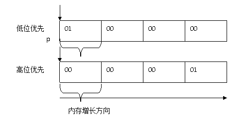那么如何取得这个整数的低地址所在的这个字节呢？根据指针的定义，只需要定义一个char类型的指针，指向整数x的地址，那么char类型的指针获取的，就是低地址所在的这个字节。于是得到下面的算法：
/*return value :0—big-endian ;1—little-endian*/
int get_endian()
{
int x=0x1;
char *p=(char*)&x;
return *p ;
}
int main(void)
{
printf(”The platform %s \n ”,get_endian() ? ”is little-endian”:”is big-endian”);
return 0;
}
8.11 指针加减运算
大家已经知道，C语言最适合于底层的开发，一个重要的原因就是因为它支持指针，能够直接访问内存和操作底层的数据，可以通过指针直接动态分配与释放内存：
//下面是用typedef定义一个新结构最常用的定义形式
//在微软的面试中，在考查你某个算法前，一般会让你先定义一个与算法相关的结构。
//比如链表排序的时候，让你定义一个链表的结构。
typedef struct _node
{
int value;
struct _node * next;
}node, *link;
node *pnode = NULL; // 声明变量都应该初始化，尤其是指针
pnode = (node *)malloc(sizeof (node)); // 内存分配
//务必检测内存分配失败情况，程序健壮性的考查
//加上这样的判断语句，会让你留给面试官一个良好的印象
//不加这样的判断，如果分配失败，会造成程序访问NULL指针崩溃
if (pnode == NULL)
{
// 出错处理，返回资源不足错误信息
}
memset(pnode, 0, sizeof(node)); //新分配的内存应该初始化，否则内存中含有无用垃圾信息
pnode->value = 100;
printf(“pnode->value = %d\n”, pnode->value);
node * ptmp = pnode;
ptmp += 1; //指针支持加减运算，但须格外小心
free(pnode); //使用完内存后，务必释放掉，否则会泄漏。一般采取谁分配谁释放原则
pnode = NULL;//释放内存后，需要将指针置NULL，防止野指针
上面的这段代码演示了指针的基本使用方式。在指针声明的时候，最好将其初始化为NULL，否则指针将随机指向某个区域，访问没有初始化的指针，行为为未定义而为程序带来预想不到的结果；指针释放之后，也应该将指针指向NULL，以防止野指针。因为指针所指向的内存虽然释放了，但是指针依然指向某一内存区域。
指针的运算最容易出错。指针支持加减运算。上面代码中ptmp += 1运算结束之后，指针指向的区域不是向前移动了一个字节，而是向前移动了sizeof (node)个字节，也就是说“1”代表了指针指向的数据结构（node）大小个字节。如果要让指针向前移动一个字节，那么需要先对指针进行类型转换：(char *)ptmp + 1或者(unsigned long)ptmp+1。
也就是说，对于指针p，指针的加法运算p = p + n中，p向前移动的位置不是n个字节，而是n * sizeof(*p)个字节，指针的减法运算与此类似。
现在为了让大家对指针有深刻的理解和牢固的掌握，重点研究一些与指针相关的典型问题。这些问题频繁出现在各大知名IT企业的笔试或者技术面试中。当然，这也是学习C语言必须掌握的问题。
一组易混淆的指针表达式：
1. *p++; //*p,p++ 2. (*p)++; //(*p)++，即*p = *p+1或者*p += 1; 3. b=*p++; //b=*p;p++ 4. b=(*p)++; //b=*p;(*p)+=1; 5. b=++*p; //(*p)+=1;b=*p; 6. b=++(*p); //(*p)+=1;b=*p; 7. b=*++p; //p+=1;b=*p; 8. b=*(++p); //p+=1;b=*p
//有关于*p++,(*p)++,++*p,++(*p),*++p;的区别
int _tmain(int argc, _TCHAR* argv[])
{
int a=1;
int *p=&a;
int res=0;
// 一、*p++
//*p++，由于单目运算符是右结合律，所以p先与++结合，即等价于：
//*(p++)
//由于p++在表达式里是先取值，再加1，因此等价于：
//res = *p;
//p= p+1;这里的1是1个单位长度，这里由于p是int
//所以，是4个字节的长度
//验证如下：
res = *p++;
printf("res:%d,p:%p,&a:%p\n",res,p,&a);
// res:1,p:0012FF48,&a:0012FF44
//二、(*p)++
a=1;
p = &a;
//这里(*p)++等价于先将*p的值给了res，然后，再将(*p)进行加1
//即等价于：
//res = *p;
//*p = *p+1，因为*p即为a,所以也就是a=a+1，a的值将变为2
//验证如下：
res = (*p)++;
printf("res:%d,p:%p,&a:%p,a:%d\n",res,p,&a,a);
// res:1,p:0012FF44,&a:0012FF44,a:2
//三、++(*p)
a=1;
p = &a;
//++(*p)，也就是先把*p对应的值加1，再把加1后的*p的值传给res
//也就是等价于：
//*p=*p+1,因为*p就是a，所以也就是a=a+1
//res = *p;
//验证如下：
res= ++(*p);
printf("res:%d,p:%p,&a:%p\n",res,p,&a);
// res:2,p:0012FF44,&a:0012FF44
//四、*++p
a=1;
p=&a;
//*++p，先将p的地址加1，然后再将p的值给res，即：
//p = p+1;
//res = *p;
//验证如下：
res = *++p;
printf("res:%d,p:%p,&a:%p\n",res,p,&a);
//五、++*p
a=1;
p=&a;
//++*p等价于++(*p),参见上面的三
//验证如下：
res = ++*p;
printf("res:%d,p:%p,&a:%p\n",res,p,&a);
// res:2,p:0012FF44,&a:0012FF44
return 0;
}
8.12 数组名：常量指针
我们已经学习过数组的定义，并且已经知道，数组名所代表的值就是数组的首地址，一旦定义了数组之后，数组名所代表的值就不能再改变。从指针的角度来看，数组名就是一个常量指针，比如：
int a[10];
那么a就是一个常量指针，即：int *const a。因此，不能再用其它的值赋值给a。因为a是常量。
此外，数组名虽然代表了数组的首地址虽然a与&a值一样，都是数组的首地址，但是，a与&a的含义并不一样。对于一维数组来说：
int a[10];
&a+1中的1代表的是整个数组的长度10*sizeof(int);
a+1中的1代表的是一个元素的长度sizeof(int)。
&a[0]+1中的1也代表的是一个元素的长度。
对于多维数组来说：
int a[5][10];
a和&a都是数组a[5][10]的首地址。那么它们有什么不同呢？实际上，它们代表的类型不同。a是int a[10]的类型，而&a则是a[5][10]的类型。大家知道，指针运算中的“1”代表的是指针类型的长度。所以a+1和&a+1中的1代表的长度分别为a的类型a[10]即sizeof (int) * 10 和&a的类型a[5][10]即sizeof (int)*10*5。所以a 的首地址为1310392，那么a + 1和&a + 1的地址为：
a + 1 = 1310392 + sizeof (int) * 10 = 1310392 + 4 * 10 = 1310432
&a + 1 = 1310392 + sizeof (int) * 10 * 5 = 1310392 + 4 * 10 * 5 = 1310592
更抽象点的说，如果定义一个多维数组int a[M1][M2][…][Mn]，那么a + 1 = a首地址+M2*M3*…*Mn *sizeof (int)；而&a + 1 = a首地址 + M1*M2*…*Mn*sizeof (int)。
相差第一维M1的倍数。
&a[0][0]：就是数组第一个元素的地址，它的内存字节是4个字节。因此&a[0][0]+1，此处的1代表的长度是4个字节。
8.13 常量指针与指针常量
试指出下面的指针的含义与区别：
1）const int *a; 2）int const *a; 3）int * const a; 4）const int *const a;
此题考查的是包含const关键字声明指针的含义。现分析如下：
1）const int *a; //指针常量，指针指向的变量不能改变值 2）int const *a; //指针常量，与const int *a等价 3）int * const a; //常量指针，指针本身不能改变值 4) const int *const a; //常量指针与指针常量
Bjarne博士在他的《The C++ Programming Language》里面给出过一个区别的方法：把一个声明从右向左读。例如：
char *const cp; ( 我们把“*” 读成 “pointer to” ) cp is a const pointer to char //int* const指向常量的指针 const char * p; p is a pointer to const char; //const int*常指针 char const * p;
同上因为C里面没有const *的运算符，所以const只能属于前面的类型。
int a[10];//数组是一个常量指针，等价于int * const a;a[0],a[1] int * const a;//常量指针，指针不能改，但指向的内存能改
example:
int value = 5; int *const a = &value; int tmp = 100; a = &tmp; //error *a = 100; //right,value=100; const int * a;//指针常量,指针能改，但指向的内存不能改 int const * a;
example:
const int value = 100; const int * a = &value; int tmp = 2; *a = 5; //error a = &tmp; //right const int * const a;//a既是指针常量，也是常量指针,指针不能改，指向的内存也不能改 const int value = 1; const int * const a = &value; int tmp = 7; a = &tmp; //error; *a = 9; //error //把*读作pointer to int * const p; //p is a const pointer to int const int * p; //p is a pointer to int const int const * p; //p is a pointer to const int const int * const p; //p is a const pointer to int const
8.14 指针与数组关系
现在大家已经明白，数组名，其实是一个常量指针：
int a[10];
a的类型为：int * const a;//a是常量指针
因此在访问数组元素的时候：
a[i], 与*(a+i)都可以访问第i个元素的值。而&a[i]与a+i都是第i个元素的地址。同样，我们也尅定义一个整数指针pa指向数组的首地址：
int *pa=&a[0]; int *pa=a;
因此pa+i也是第i个元素的地址，而*(pa+i)和pa[i]引用的也是a[i]的值。
利用指针与数组的关系，我们可以动态的分配一段空间，来存放一个班级学生的成绩，这样可以来表示不同班级学生的人数：
int _tmain(int argc, _TCHAR* argv[])
{
int number = 0;
int sum = 0;
printf("Please input the number of students\n");
scanf("%d", &number);
if(number<=0)
return -1;
int *pscore = (int *)malloc(number*sizeof(int));
if(pscore==NULL)
{
printf("memory is not enough\n");
return -1;
}
memset(pscore, 0, number*sizeof(int));
for(int i = 0;i<number;i++)
{
printf("Please input the score %d\n", i);
scanf("%d",pscore+i);//&pscore[i]是可以的
}
for(int i=0;i<number;i++)
{
sum += pscore[i];//*(pscore+i)是可以的
}
printf("The average is:%d\n", sum/number);
free(pscore);
return 0;
}
8.15 字符指针
字符指针的定义是：
char *p;
字符指针，既可以指向字符变量，也可以指向字符串（其实就是字符串中首字符的地址）。比如：
char *str=“hello world”; //这里str是一个字符指针，它是”hello world”字符串中首字符’h’的地址。
因为字符串是以’\0’结尾的，所以可以通过字符指针来遍历字符串：
while(*str!=‘\0’)
{
printf(“%c”, *str);
str++;
}
字符指针也可以指向某个字符变量，比如：
char ch='a'; char *pch=&ch;
此外，将字符串传给函数做参数，也是通过字符指针完成的：
1 以字符指针的方式传递字符数值给函数：
void printf_char(char *p) // 字符指针传字符
{
printf( “%c“,*p);
}
2 以字符指针的方式传递字符串给函数：
void printf_str(char *p)//字符指针传字符串
{
while(*p)
{
printf(“%c“,p);
p++;
}
}
8.16 二级指针
所谓二级指针，就是指向指针的指针，即该指针的值是另外一个一级指针的地址。与此类似，如果一个指针中存放的是二级指针的地址，那么该指针就是三级指针，与此类推。
#include <stdio.h>
int main()
{
char c = 'a';
char *pch = &c; // pch为一级指针
char **ppch = &pch; // ppch为二级指针，存放这一级指针的地址
printf("%c\n", **ppch);
printf("%p,%p,%p\n", pch, ppch, *ppch);
printf("%p,%p,%p", &c, &pch, &ppch);
while(1);
return 0;
}
/*
a
0012FF44,0012FF40,0012FF44
0012FF44,0012FF40,0012FF3C
*/
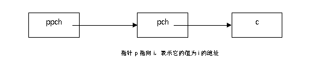
如上图所示，pch是一级指针，存放着变量c的地址；ppch是二级指针，存放这一级指针pch的地址。只要画出了上面的关系图，那么一次*运算，就是向右移动一次，两次*运算，就是往右移动两次，即*pch即为c，*ppch为pch，**ppch即为c。
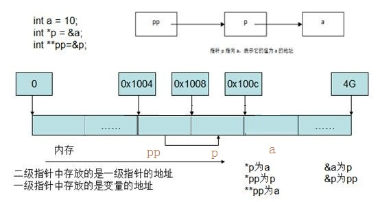如果指针做实参，那么传实参的指针（地址），就必须使用二级指针。通俗的说，要改变指针的值，必须传指针的指针（地址）（二级指针）
int main(void)
{
char *p = NULL;//p是指针，做为实参，初始值为NULL
get_memory(); //通过该函数，为p分配一块内存。如何定义get_memory函数和传参p？
strcpy_s(p, 100,”hello world”);
printf(“%s\n”, p);
free(p);
p=NULL;
return 0;
}
因此get_memory函数设计如下：
1 传指针的指针（二级指针）：
void get_memory(char **p)
{
*p=(char *)malloc(100);
}
调用方式：
get_memory(&p);
2 传指针的引用：
void get_memory(char *&p)
{
p=(char *)malloc(100);
}
调用方式：
get_memory(p);
利用指针与函数的知识，分析下面代码的输出：
#include <stdio.h>
int i = 0, j = 20, *p1 = &i, *p2 = &j, *p2_ = &j;
void f(int **ptr1, int *ptr2)
{
int *tmp = ptr2;
**ptr1 *= 10;
*ptr2 *= 10;
ptr2 = *ptr1;
*ptr1 = tmp;
printf("i=%d\tj=%d\n",i,j);
printf("p1=%p p2=%p j=%p",p1,p2,&j);
}
int main()
{
f(&p1, p2_);
while(1);
return 0;
}
/*
i=0 j=200
p1=00427318 p2=00427318 j=00427318
*/
请问调用f(&p1, p2_)之后i, j, p1, p2的值各是什么？
分析与解答：
首先我们画出程序执行过程中调用f()函数时堆栈的情况如下图所示：
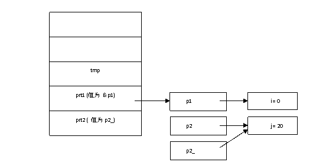图 程序执行栈
第1句int *tmp = ptr2;即tmp = &j，tmp指针指向了变量j。 第2句**ptr1 即*（*ptr1）即*p1 即 i。**ptr1 *= 10 即为i *= 10 即为0;所以i 的值为0。 第3句*ptr2 *= 10 即为*p2_ *= 10即为j *= 10即为 200;所以j的值为200。 第4句ptr2 = *ptr1则为p2_ = *ptr1即为p2_ = p1; 第5句*ptr1 = tmp则为p1 = tmp = &j
因此答案为：
i = 0 j = 200 p1 = &j p2 = &j
可以通过下面的程序来验证一下：
#include <stdio.h>
void f(int **ptr1, int *ptr2)
{
int *tmp = ptr2;
**ptr1 *= 10;
*ptr2 *= 10;
ptr2 = *ptr1;
*ptr1 = tmp;
}
int main(void)
{
int i = 0, j = 20, *p1 = &i, *p2 = &j;
f(&p1, p2);
printf("i = %d, j = %d, &i = %x, &j = %x, p1 = %x, p2 = %x\n",
i, j, &i, &j, p1, p2);
while(1);
return 0;
}
// i = 0, j = 200, &i = 12ff44, &j = 12ff40, p1 = 12ff40, p2 = 12ff40
仔细检查上面的函数的输出，看它是否与计算结果一致。实践是检验真理的唯一标准。写一个实验程序去验证推理，是程序员的一个好习惯。
8.17 函数指针与指针函数
8.17.1函数指针
函数名，就是函数的首地址。如果一个指针变量，存放的是函数的地址，那么就把这个指针叫做函数指针。定义函数指针有2中形式：
第一种，首先用typdef定义出函数指针的类型，然后，通过函数指针类型来定义函数指针
第二种，直接用函数的签名来定义函数指针
void print_int(int x)
{
printf("hello, %d\n", x);
}
typedef void (*F)(int x);//此处定义了一个函数指针类型F
int main(void)
{
int a =100;
void (*f1)(int x);
f1= print_int; // f1是指针定义出来的函数指针，把函数print_int赋值给f1
f1(a);
F f2= print_int; // f2是通过函数指针类型F定义出来的函数指针，把print_int赋值给f2。
f2(a);
print_int(a);
return 0;
}
8.17.2 指针函数
指针函数：即返回指针的函数。比如下面的代码中，我们尝试着调用get_memory()获取一个内存，用来存放“hello world“这个字符串，那么就可以将get_memory()设置成为一个返回指针的函数：
char *get_memory();
int main(void)
{
char *p = NULL;//p是指针，做为实参，初始值为NULL
p=get_memory();//通过该函数，为p分配一块内存。如何定义get_memory函数
strcpy_s(p, 100,”hello world”);
printf(“%s\n”, p);
free(p);
p=NULL;
return 0;
}
char *get_memory()
{
return (char *)malloc(100);
}
注意：指针函数不能返回局部变量的指针（地址），只能返回堆上内存的地址，或者函数参数中的内存地址。因为局部变量存放在栈上，当函数运行结束后，局部变量就被销毁了，这个时候返回一个被销毁的变量的地址，调用者得到的就是一个野指针。
注意下面几个定义的区别：
int f(); //普通的函数 int *fpi(); //指针函数 int (*pfi)(); //函数指针
8.18 数组指针与指针数组
1．说出下面的指针表示的什么？
1) int *a[10];
2) int (*a)[10];
3) int (*a)(int);
int *a(int);
4) int (*a[10])(int);
5) int *a, **a;
6) char str[];
7) char *str, **str;
此题经常被用来做为笔试题。笔者毕业当年参加SYNOPSIS的面试时便遇到了此题。它综合了指针变量的各种声明形式。下面我们给出各个指针表示的含义：
1）int *a[10]; //指针数组 2）int (*a)[10]; //数组指针 3）int (*a)(int); //函数指针 int *a(int); //指针函数，返回指针的函数 4）int (*a[10])(int); //函数指针数组。注意：*与[]的优先级来判断这组的区别 5）int *a, **a; //指针和指向指针的指针 6）char str[]; //字符串数组 7）char *str, **str; //字符指针和指向字符的指针
要掌握这些复杂形式的指针意义并不容易，因为容易混淆。那么有没有特别的要领呢？其实此题的关键是要明白[]，*，和()运算符的优先级：() > [] > *。比如int *a[10]，由于[]的运算级别高于*，所以该表达式首先是一个数组。那么它是什么数组呢？由int *确定它是个指针数组。又比如int(*a)[]，由于() 高于[]，所以它是一个指针。那么它是什么指针呢？由[]确定它是个数组指针，即指向数组的指针。
与“指针数组”和“数组指针”类似的有“函数指针”与“指针函数”，“常量指针”与“指针常量”。这些概念都符是偏正关系，所以指针数组其实就是数组，里面存放的是指针；数组指针就是指针，这个指针指向的是数组；函数指针就是指针，这个指针指向的是函数，指针函数就是函数，这个函数返回的是指针；常量指针就是指针，只不过这个指针是常量的，不能再修改值指向别的地方；指针常量，就是指指针本身不是常量指针指向的内存是常量，不能修改。
2．sizeof（）计算指针长度。
char *p1 = “Hello, word!”
char p2[] = “Hello, world”
char p3[] = {‘h’, ‘e’, ‘l’,’l’,’o’,’,’, ‘ ‘, ‘w’,’o’,’r’,’l’,’d’}
此题考查的是计算指针与数组的长度。其中，指针的长度（在32位机器系统上）为4，字符串数组的长度必须包含字符串的结束标志符’\0’，数组的长度为元素个数乘以单个元素大小。因此，该题的答案为：
char *p1 = “Hello, word!”
p1为字符串指针，所以sizeof (p1) = 4。
char p2[] = “Hello, world”
p2为字符数组并初始化为”Hello, world”。由于字符串的存储特点，总是以’\0’做为结束标志，因此上面的字符串等价于下面的数组：char p2[] = {‘h’, ‘e’, ‘l’,’l’,’o’, ‘ ‘, ‘w’,’o’,’r’,’l’,’d’,’\0’}，必须包含字符串的结束标志符’\0’，所以sizeof (p2) = 13。
char p3[] = {‘h’, ‘e’, ‘l’,’l’,’o’, ‘ ‘, ‘w’,’o’,’r’,’l’,’d’}
p3为字符数组，并由12个字符初始化，所以sizeof (p3) = 12。
注意，strlen(p)计算的是字符串中有效的字符数（不含’\0’）。所以strlen（p）的值为12。考察下面拷贝字符串的代码，看看有什么问题没呢？
char *str = “Hello, how are you!”;
char *strbak = (char *)malloc(strlen(str));
if (NULL == strbak)
{
//处理内存分配失败，返回错误
}
strcpy(strbak, str);
显然，由于strlen()计算的不是str的实际长度（即不包含’\0’字符的计算），所以strbak没有结束符’\0’，而在C语言中，’\0’是字符串的结束标志，所以是必须加上的。所以上面的代码应该是：
char *str = “Hello, how are you!”;
char *strbak = (char *)malloc(strlen(str)+1);
if (NULL == strbak)
{
//内存分配失败，返回错误
}
strcpy(strbak, str);
既然在这里谈到了sizeof，现在我们就把sizeof运算在下面做一个系统的总结：
1）参数为数据类型或者为一般变量。
例如sizeof(int)，sizeof(double)等等。这种情况要注意的是不同系统或者不同编译器得到的结果可能是不同的。例如int类型在16位系统中占2个字节，在32位系统中占4个字节。
2）参数为数组或指针。下面举例说明：
int a[50]; //sizeof(a)=4*50=200; 数组所占的空间大小为200字节。
注意数组做函数参数时，在函数体内计算该数组参数则等同于计算指针的长度。
int *a=new int[50];// sizeof(a)=4; a为一个指针，sizeof(a)是求指针的大小，
// 在32位系统中，当然是占4个字节。
3）参数为结构或类。
sizeof应用在类和结构的处理情况是相同的。有两点需要注意，第一、结构或者类中的静态成员不对结构或者类的大小产生影响，因为静态变量的存储位置与结构或者类的实例地址无关。第二、没有成员变量的结构或类的大小为1，因为必须保证结构或类的每一个实例在内存中都有唯一的地址。关于更多的结构的sizeof大小计算，请参考1.4节数据对齐。
4．计算数组长度
在计算数组长度的时候，我们需要注意数组作为函数的参数，将退化为指针，所以，其长度大小为指针的长度。现在我们来看下面这段代码：
int a[10]; //sizeof (a) = 10*sizeof (int) = 40；
int a[10];
void func(int a[], int n)
{
printf(“%d”, sizeof (a)); // 此时数组退化为指针，所以 sizeof (a) = 4
}
需要指出的是，数组也是一个指针，但它是常量指针，即int a[10]中的a可以看做是int * const a，所以一旦声明，a不能再被改变。
下面来看以下代码中的两个sizeof用法有问题吗？
void UpperCase( char str[] ) // 将 str 中的小写字母转换成大写字母
{
for( size_t i=0; i<sizeof(str)/sizeof(str[0]); ++i )
if( 'a'<=str[i] && str[i]<='z' )
str[i] -= ('a'-'A' );
}
char str[] = "aBcDe";
cout << "str字符长度为: " << sizeof(str)/sizeof(str[0]) << endl;
UpperCase( str );
cout << str << endl;
分析：函数内的sizeof有问题。根据语法，sizeof如用于数组，只能测出静态数组的大小，无法检测动态分配的或外部数组大小。函数外的str是一个静态定义的数组，因此其大小为6，函数内的str实际只是一个指向字符串的指针，没有任何额外的与数组相关的信息，因此sizeof作用于上只将其当指针看，一个指针为4个字节，因此返回4。
5．分析下面的代码，试指出数组指针的不同含义。
#include <stdio.h>
int main(void)
{
int a[5][10];
printf("%d,%d,%d\n", a, a+1, &a+1);
return 0;
}
其输出结果为：1310392,1310432,1310592。试分析原因。
解答：a和&a都是数组a[5][10]的首地址。那么它们有什么不同呢？实际上，它们代表的类型不同。a是int a[10]的类型，而&a则是a[5][10]的类型。大家知道，指针运算中的“1”代表的是指针类型的长度。所以a+1和&a+1中的1代表的长度分别为a的类型a[10]即sizeof (int) * 10 和&a的类型a[5][10]即sizeof (int)*10*5。所以a 的首地址为1310392，那么a + 1和&a + 1的地址为：
a + 1 = 1310392 + sizeof (int) * 10 = 1310392 + 4 * 10 = 1310432
&a + 1 = 1310392 + sizeof (int) * 10 * 5 = 1310392 + 4 * 10 * 5 = 1310592
更抽象点的说，如果定义一个数组int a[M1][M2][…][Mn]，那么a + 1 = a首地址+M2*M3*…*Mn *sizeof (int)；而&a + 1 = a首地址 + M1*M2*…*Mn*sizeof (int)。
a的定义类型: int (*a)[10];
&a的定义类型:int (*a)[5][10];
8．分析程序运行结果。
下面的C代码在VC++6.0和低位优先的平台下的运行结果是什么？请详细说明原因。
#include <stdio.h>
int main(void)
{
int a[5] = {1,2,3,4,5};
int *ptr1 = (int *)(&a+1);
int *ptr2 = (int *)((int )a+1);
printf("%x,%x",ptr1[-1],*ptr2);
return 0;
}
分析：由第5题分析，大家知道，&a和a都表示数组的首地址，但是它们代表的类型不同。其中&a代表整个数组，而a代表数组的第一个元素，即&a+1中1代表的大小是整个数组，而a+1 中1的大小代表的是一个元素的大小。
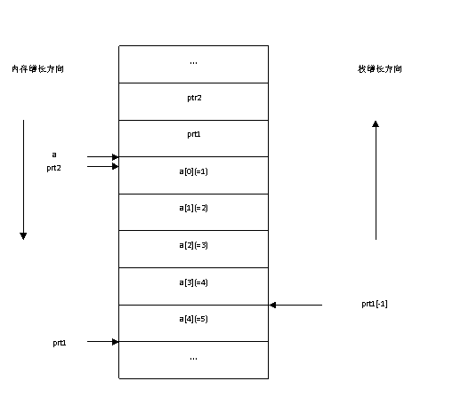图 程序执行堆栈情况
前面已经提到，指针加减法运算，后面的数字表示指针指向的数据类型的大小的倍数。比如&a+1，其中的1就表示指针向前移动1*sizeof(&a)那么多的字节。而&a表示整个数组，所以ptr1 = (int *)(&a+1)，ptr1指到了数组的末尾位置（见图）。因为ptr1[-1]即为*((int*)ptr1-1)，即指针ptr1向低地址移动sizeof(int)个字节，即向后移动4个字节，正好指到a[4]的位置，所以ptr1[-1]为5。对于语句*ptr2 =(int *)((int)a+1)，在这里，我们已经将指针a强制转换成了整型，a+1不是指针运算了。（int *)((int)a+1)指向了首地址的下一个字节。我们把数组的存储结构按照1字节为单位画一下(注意所在的平台为低位优先，所以低位字节存储在低地址），现在内存数据的情况如图所示：
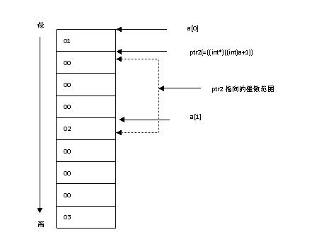图 数组存储布局
所以，*ptr2所代表的整数（四个字节，且低位优先），我们从图中就可以看出是：2000000
9．分析程序运行结果。
struct S
{
int i;
int *p;
};
void main(void)
{
S s;
int *p = &s.i;
p[0] = 4;
p[1] = 3;
s.p = p;
s.p[1] = 1;
s.p[0] = 2;
}
问：程序会在哪一行死掉？
此题是微软公司曾经的一道笔试题。考查了程序员对指针的灵活掌握。现在来分析此题。首先，画出如图所示的S的结构：
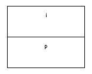图 S结构图
程序在执行过程中：
int * p = &s.i; // 如图，p指向i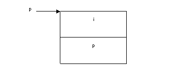
图 程序执行S结构变化图
p[0] = 4; // 如图 ， p[0]=s.i，所以s.i=4 p[1] = 3; // p[1]=s.p，所以s.p为3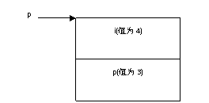
图 程序执行S结构变化图
s.p = p; // 如图，s.p指向了p，而p是指向s.i的，即s.p指向了s.i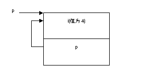
图 程序执行S结构变化图
s.p[1]即为p[1]（因为s.p为p，运算符”.”与”[]”同级，结合率为从左向右，所以s.p[1] * 等同于(s.p)[1])，而p[1]为s.p成员，所以如图，s.p=1；此时s.p不指向s.i了，而是指向了1
s.p[1] = 1;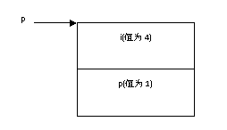
图 程序执行结构变化图
* s.p[0]即为*(s.p + 0)=2，即*(s.p)=2，即*(1)=2；由于内存中0到64k的地址范围都是NULL地址空间，所以为*NULL=2，这是非法赋值，所以出错。
s.p[0] = 2; //非法赋值，出错
注意：程序中有两个p。一个是S结构中的成员，一个是局部变量。二者不可混淆。
10．指针与引用的区别
引用是一种没有指针语法的指针，与指针一样，引用提供对对象的间接访问。引用为所指对象的一个别名（alisas）。如下面的例子：
int i＝0； int &refi＝i； // refi指向一个i的引用
引用必须初始化，而指针没有这个要求（尽管没有初始化的指针很危险）；引用总是指向它最初获得的那个对象，而指针可以被重新赋值。
C++中向函数中传递指针和传递指针的引用的区别：
如果是传递指针，那么会先复制该指针，在函数内部使用的是复制后的指针，这个指针与原来的指针指向相同的地址，如果在函数内部将复制后的指针指向了另外的新的对象，那么不会影响原有的指针。所以要想在函数中改变指针，必须传递指针的指针或者指针的引用。
使用对象指针作为函数参数要经使用对象作函数参数更普遍一些。因为使用对象指针作函数参数有如下两点好处：
1）实现传址调用。可在被调用函数中改变调用函数的参数对象的值，实现函数之间的信息传递。
2）使用对象指针实参仅将对象的地址值传给形参，而不进行副本的拷贝，这样可以提高运行效率，减少时空开销。
使用对象引用作函数参数要比使用对象指针作函数更普遍，这是因为使用对象引用作函数参数具有用对象指针作函数参数的优点，而用对象引用作函数参数将更简单，更直接。
11．指针的引用修改指针：
在C语言中经常使用指针，指针的指针，指针的引用做函数的参数。那么它们的区别是什么呢？
1）指针引用做参数：
void func（ MyClass *&pBuildingElement ）； //指针的引用，能修改指针
2）指针做参数：
void func（ MyClass *pBuildingElement ）；//指针，不能修改指针
3）指针的指针做参数：
void func（ MyClass **pBuildingElement ）；//指针的指针，能修改指针
下面是3个实际函数调用的例子：
void func1（MyClass *pMyClass）
{
DoSomething（pMyClass）；
pMyClass = // 其他对象的指针
}
MyClass *p = NULL；
func1（p）；//指针做参数，p不能被改变其值
void func2（MyClass **pMyClass）；
{
*pMyClass = new MyClass；
……
}
MyClass *p = NULL；
func2（&p）；//指针的指针做参数，p的值可以被改变
void func3（MyClass *&pMyClass）；
{
pMyClass = new MyClass；
……
}
MyClass *p = NULL；
func3（p）；//指针的引用做参数，p的值可以改变
下面是一个Microsoft开发库中CObList的两个成员函数：
1. Cobject *&GetAt（POSITION position）； 2. Cobject *GetAt（POSITION position）const；
这里有两个GetAt()函数，功能都是获取给定位置的元素。它们的区别何在呢？区别在于第一个是返回对象指针的引用，第二个返回对象的指针。因此第一个可以修改函数返回的对象，而第二个则不行。所以如果写成下面这样：
Cobject *pObj = myList.GetAt（pos）；
则pObj返回的是列表中某个对象的指针，如果接着改变pObj的值：
pObj = pSomeOtherObj；
这并改变不了在位置pos处的对象地址，而仅仅是改变了变量pObj。但是，如果写成下面这样：
Cobject *&rpObj = myList.GetAt（pos）；
现在，rpObj是返回的引用列表中的对象的指针，所以当改变rpObj时，也会改变列表中位置pos处的对象地址，也就是说替代了列表中的这个对象。这就是为什么CObList会有两个GetAt函数的缘故。一个可以修改指针的值，另一个则不能。
事实上，函数可以返回任何类型的引用，不仅仅是指针的引用。比如下面的调用：
int& abc(int &x)；
函数中&是什么作用？实际上它的作用就是对变量的引用。
下面举个实际例子：
int x = 0;
int &a(int &i)//传入实参的引用
{
i = - 1;
return x ; //返回x的引用
}
void main(void)
{
int j=10;
a(j)=100;
//这时候j = -1，x = 100了，因为函数a()返回了x的引用，可以修改x的值
}
总之，返回引用就是返回一个变量的地址里面的内容，就是真正地返回这个变量本身，它可以用作左值，以改变返回的引用的变量的值。在上面的代码中，函数传入的是实参的引用，返回的是x的引用。因此在main()函数调用了a()函数之后，j和x的值都会发生改变。返回一个类型的引用，在操作符重载赋值运算符“=”中，这种方式是经常用到的。
8.19 指针做实参，如何修改指针
指针做实参，如果想修改指针的值，必须传指针的指针或者指针的引用。现在来分析下面的C代码：
void GetMemory(char *p)
{
p = (char *)malloc(100);
}
void Test(void)
{
char *str = NULL;
GetMemory(str);
strcpy_s(str, 100,"hello world");
printf(str);
free(str);
str=NULL;
}
请问运行Test 函数会有什么样的结果？
分析：上面的代码试图使用指针作为参数，分配动态内存。该代码会存在两个问题：
1． 内存泄漏。
首先，通过指针作为参数无法成功申请一块动态分配的内存。这是因为，GetMemory()函数获得的是实参指针变量的一个拷贝。因此，它只是将新分配的内存赋给了形参（即实参指针的拷贝）。而实参并没有获得这块内存。在Test()函数中，发现并没有释放str指向内存的语句。但这不是内存泄露的根本原因。即使在程序后面加上一句：
free(str);
内存依然会泄漏。这是因为，str根本没有获得这块内存，而是由形参获得了。而形参是一个栈上的变量。在函数执行之后就已经被系统收回了。这是造成了内存泄漏的根本原因。
要想成功获得分配的内存，可以采用下面的两种方法：
char* GetMemory(char *p)
{
p = (char *)malloc(100);
return p;
}
上面的代码直接返回新分配的内存。由于内存是在堆上而不是在栈上分配的，所以函数返回后不存在任何问题。
或者：
void GetMemory(char **p)//传指针的指针
{
*p = (char *)malloc(100);
}
void Test(void)
{
char *str = NULL;
GetMemory(&str);
strcpy_s(str, 100,"hello world");
printf(str);
free(str);
str=NULL;
}
这种方法是通过指针的指针来分配内存。用这种方法分配内存，传递给函数的是指针地址的一个拷贝，那么*p就是指针本身。因此新分配的内存成功的赋给了做实参的指针。
void GetMemory(char *&p)//传指针的引用（引用是C++中的概念）
{
*p = (char *)malloc(100);
}
void Test(void)
{
char *str = NULL;
GetMemory(str);//传指针的引用
strcpy_s(str, 100,"hello world");
printf(str);
free(str);
str=NULL;
}
2． NULL指针引用导致程序崩溃。
由于str并没有获得这块内存，那么str的值依然为NULL，所以strcpy()函数访问了一个NULL指针，直接导致程序崩溃。
8.20 函数不要返回局部变量的指针或引用
函数一定不要返回局部变量的指针或者引用。如下面的代码：
char *func(void)
{
char c = ‘A’;
char *p = &c;
return p;
}
char &func(void)
{
char c='A';
return c;
}
在func函数中，我们将局部变量c的地址当做一个指针返回，那么在main函数中，我们是不能够再次使用或者访问这个指针所指的内存的。因为局部变量c的生命周期只存在于函数func运行期间。一旦func结束运行之后，那么c就被销毁了，c的地址就是一个无效的内存地址，因此，当在main函数中执行了：
pc=func() ;
pc指向的内存是无效的内存，因此pc是一个野指针，试图访问一个野指针，其后果是未定义的，程序有可能崩溃，有可能访问的是垃圾值。
int main(void)
{
char * pc = NULL;
pc = func();
printf(“%c”, *pc);
return 0 ;
}
8.21 指针使用注意事项
分析完指针的一些典型问题之后，现在将使用指针的一些需要注意的问题总结如下：
1）指针在声明的时候最好初始化。
指针变量没有被初始化，任何指针变量刚被创建时不会自动成为NULL指针，它的缺省值是随机的，它会随机的指向任何一个地址（即野指针），访问野指针会造成不可预知的后果。所以，指针变量在创建的同时应当被初始化，要么将指针设置为NULL，要么让它指向合法的内存。
2）指针的加减运算移动的是指针所指类型大小。
前面已经提到，指针的加法运算p = p + n中，p向前移动的位置不是n个字节，而是n * sizeof(*p)个字节，指针的减法运算与此类似。
3）当用malloc或new为指针分配内存时应该判断内存分配是否成功，并对新分配的内存进行初始化。
用malloc或new分配内存，应该判断内存是否分配成功。如果失败，会返回NULL，那么就要防止使用NULL指针。在分配成功时，会返回内存的地址。这个时候内存是一段未被初始化的空间，里面存在的可能是垃圾数据。因此，需要用memset等对该段内存进行初始化。
此外，应该防止试图使用指针作为参数，去分配一块动态内存。如果非要这么做，那么请传递指针的指针或指针的引用。
4）如果指针指向的是一块动态分配的内存，那么指针在使用完后需要释放内存，做到谁分配谁释放的原则，防止内存泄漏。
此点笔者会在第9章内存分配中进行专门的介绍，详情请参考内存泄漏预防与检测。
5）指针在指向的动态内存释放后应该重新置为NULL，防止野指针。
野指针不是NULL指针，是指向“垃圾”内存的指针。野指针是很危险的，它可能会造成不该访问的数据或不该改的数据被访问或者篡改。在应用free或者delete释放了指针指向的内存之后，应该将指针重新初始化为NULL。这样可以防止野指针。
野指针不是NULL指针，是指向“垃圾”内存的指针。野指针是很危险的，它可能会造成不该访问的数据或不该改的数据被访问或者篡改。在应用free或者delete释放了指针指向的内存之后，应该将指针重新初始化为NULL。这样可以防止野指针。
分析下面的程序：
void GetMemory(char **p,int num)
{
*p=(char *)malloc(num);
}
int main(void)
{
char *str=NULL;
GetMemory(&str,100);
strcpy(str,"hello");
free(str);
if(str!=NULL)
{
strcpy(str,"world");
}
printf("\n str is %s",str);
getchar();
}
分析：上面的代码经常出现在各大外企的笔试题目里，它通过指针的指针分配了一段内存，然后将”hello”拷贝到该内存。使用完后再释放掉。到此为止，代码没有任何问题。但是，在释放之后，程序又试图去使用str指针。那么这里就存在问题了。由于str没有被重新置为NULL，它的值依然指向了该内存。因此后面的程序依然能够打印出”world” 字符串。
所以，应该在free(str)后，再加上下面一行代码：
str=NULL;
6）指针操作不要超出变量的作用范围，防止野指针。
分析下面的代码：
char *func()
{
char c = ‘A’;
char *p = &c;
return p;
}
void main(void)
{
char * pc = NULL;
p = func();
printf(“%c”, *p);
}
在上面的代码中，func()函数试图返回一个指向局部变量c的指针。然而局部变量的生命期为func()函数执行期，即变量c分配在栈上，func()函数执行完后，c就不存在了。返回的指针就是一个无效的野指针。因此，打印*p时，可能会出现任何一个不可确定的字符。
本页共1179段，32831个字符，58957 Byte(字节)